The 'Absyle’ is used for rock work, generally for descending, though it can be used on some faces for ascent.
In the 'Absyle’ the body is upright, but the legs are stretched out, and the feet pressed against the rock face.
The rope passes down between the thighs, around one thigh and diagonally up and across the upper half of the body and over the shoulder opposite to the leg under which it passes. The rope may be gripped with one hand.
In descending, the free hand pulls the rope over the shoulder.
This leaves a loop below the thigh, and the feet are walking’ down the rock face until the thigh is again impossible to fall.
In ascending a rock face which has an extreme slope but is not vertical, the feet are 'walked’ up the rock face, the body is pulled up the rope, and the slack, hanging below the legs, is pulled up with one hand and fed over the shoulder. By this means the climber can 'sit’ on the rope and rest. When using the 'Absyle’ it will be found that bare feet, sandshoes or spiked shoes give a better grip on the rock face than plain leather soles.
TYING S PLIT CANES AND VINES TOGETHER
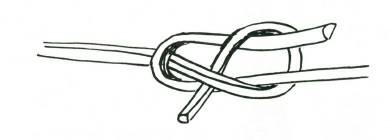
These materials will only tie with special knots and it is a safe rule to tie with the outside of the skin on the outside bend of the knot, as in A. If you try to tie with the inside of the material on the outer surface of the bend (as in B), it is probable that the material will either crack or snap off, and you may reject it as useless. The knots which are most suitable for tying these canes and vines are:
Joining knots: Sheet bend, Reef knot, and fisherman
Securing knots: Timber hitch.

When pulling the knot taut, do so gently. If you snap the joining knot the material may either cut itself or break. If the canes or vines are brittle through greenness try heat treatment.
US ES FOR BUS H-MADE ROPES
There are many occasions when bush-made ropes can be extremely useful... for climbing or descending a short cliff face; for climbing a tree; for a rope bridge; for a safety-line across a fast or flooded river.
S INGLE ROPE LADDER WITH S TICKS
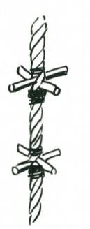
A single rope ladder is made by opening the lays of the rope and inserting cross sticks each about 8 inches long as shown with an equal amount protruding on either side of the rope. These cross sticks must be secured to the rope, and it is necessary to lash the rope above and below the sticks. The distance between the sticks should be from 15” to 18”.
To climb a rope ladder, hold the rope with both hands, bend the knees, and draw both feet up together and lay them with even pressure on the next cross sticks. When the footing is secure, raise the hands and continue the action, which is somewhat like that of a toy monkey on a string.
Bush single-rope ladders have the advantage that they can be used easily by people who may not be able to climb by ordinary means. They provide an easy means of ascending and descending a cliff or a lookout.
S INGLE ROPE LADDER WITH CHOCKS
This type of ladder has the advantage of being portable and quickly made. The chocks of hardwood are about 6” diameter and
2” deep, and are suitably bored to take the diameter of the rope.
Splice an eye at the top end and seize in a thimble to lash the rope head securely. To secure the chocks, put two strands of seizing between the strands of the rope and then work a wall knot.
ROPE BRIDGE
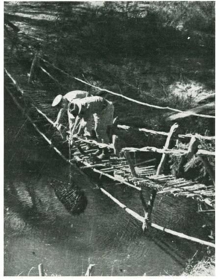
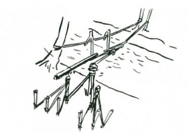
Two ropes are spun. They must be very strong and thoroughly tested. They are anchored to either side of the river, either to convenient trees or to anchors as shown.
When these ropes have been stretched taut, light 'A’ frames are made. The number required depends upon the length of the decking.
The first 'A’ frame is hooked onto the ropes and pushed forward with a stick. The footing, a straight sapling, is dropped down onto the crotch of the frame, and the bridge builder walks out along this and hooks on the next 'A’ frame, pushing it out the required distance, and repeats the process till the far bank is
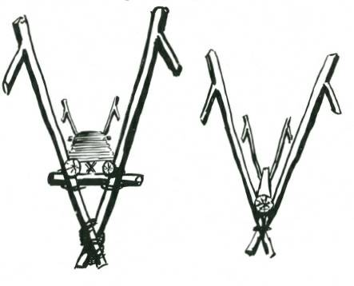
reached. Rope bridges must not be overloaded–one at a time is a safe rule. If M onkey vines, Lianas, or Lawyer vines (Calamus) are available instead of bush-made rope, use any of these. They are much stronger and will make a bridge strong enough for 4 to 6 men at a time.
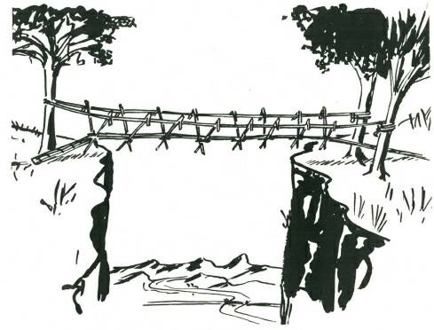
TO MEAS URE THE DIS TANCE ACROS S A RIVER OR GORGE
Select a mark on the opposite bank 'A,’ and then drive a stake on the near bank 'B.’ Walk at right angles for a known number of paces and put in another marker stake 'C,’ and continue an equal number of paces and put in a third marker 'D.’
Turn at right angles away from the river, and keep moving back until the centre marker stake and the mark on the other side of the river are in line 'E.’
M easure the distance from the third or last marker peg 'D’ to

this point 'E,’ and this distance will equal the distance across the river.
TO GET A ROPE ACROS S A NARROW DEEP RIVER
Fasten a stout stick to the end of the rope. The rope must be in the middle of the stick. Select a forked tree on the opposite bank.
Throw the free end of the coiled line with the stick across the river to the tree. After many casts when it has caught, test with two or three people to make sure the line is secure. Fasten the near end of the rope to a convenient anchor, and then the person crossing the line (usually the lightest member of the party) hangs onto the line, lifts his legs and hooks them over the rope, with his feet towards the opposite bank. By this means he can work himself across the river, fasten the rope, and do all the work which has to be done on
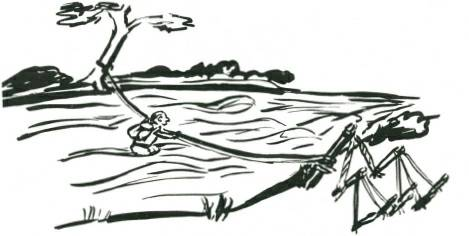
that side of the river.
S AFETY LINE FOR RIVER CROS S ING
A bush rope can be spun to serve as a safety line for crossing flooded or fast rivers. The rope is taken across by one member of the party, and fastened to an anchor on the opposite bank. As a safety line it should be above water level. The person crossing should stand on the downstream side of the rope, and face upstream. He crosses by moving his feet sideways, one step at a time, and holding all the time to the rope which helps him keep his balance. If by chance the current is so strong that it sweeps him off his feet, his grip on the line will save him from being washed downstream, and he can work his way shoreward hand over hand, until he is a less strong portion of the current where he can regain his footing.

1-2-3 ANCHOR
A very stout stake is driven into the ground, at an angle of about 45°, and to the foot of this the main rope to be anchored is fastened. To the head of this stake two ropes are secured and these are fastened to the foot of two stakes to the rear. The heads of these stakes are in turn tied back to the foot of three other stakes.
This anchor will hold secure under almost all conditions.

ANCHORING A PEG IN S AND
The only way to anchor a rope into soft sand is to attach it to a peg, and bury the peg in the sand.
Scrape a trench in the sand to a depth of between a foot and eighteen inches, deeper if high winds or very stormy weather are expected. Pass the rope round the centre of the peg; scratch a channel for it at right angles to the pegtrench.
Fill in the trench and rope channel, and fasten the free end of the rope to the standing end with a stopper hitch, and pull taut.
The buried peg should hold a tent rope in sand under all normal weather conditions.
BUS H WINDLAS S
A bush windlass, capable of taking a very heavy strain on a rope can be made by selecting a site where a tree forks low to the ground, with the fork facing the direction in which the pull is required. Alternatively, a stout fork can be driven in and anchored with the “1-2-3” method.
The windlass portion is a forked log. The forks are notched to take the lever (up to seven feet long). The rope is passed round the roller a few times so that it locks upon itself. (If the fork of the roller is long, the rope may pass through the fork.)
This type of bush windlass has many uses.
CHAPTER 2
HUTS AND THATCHING
Little skill is needed to make a comfortable, thatched, weatherproof hut using only material locally available.
Such huts can be expected to have a useful service life of 4 to 6 years without maintenance. With maintenance, such as renewing lashings, and repairs to ridge thatch, the life is anything up to 20 years.
Where rammed earth is used for walls, the life of the structure is indeterminate. M any earth wall buildings have stood undamaged for hundreds of years.
The building of a thatched hut from local materials is a creative exercise. Design must provide for the anticipated weather conditions. Finding suitable materials almost anywhere presents no problem, but considerable organisation may be required to collect the material. For the actual structure and thatching, good teamwork is required.
The final hut, with its promise of long periods of protection and shelter, is the result of combination of head work and hands.
With this comes the inward reward of having created a weatherproof hut out of nothing except the natural materials garnered from the surrounding area.

Circular hut 20 feet diameter at ground; no nails or man-made materials used in its construction. Time of erection, 12 to 18 man hours. Left half is thatched with palm leaves—right half thatched with eucalypt branches. Shortly after erection there was 4½ inches of rain in 75 minutes. The inside of the hut was completely dry after this terrific drenching.
THATCHED HUTS
The making of huts and shelters for occasional or continuous use from exclusively local materials and without the aid of any man-made equipment is not difficult. In place of nails, lashings, either of vine, bark strips or other fibrous material are used.
Framework is of round poles. Weatherproof roofing is provided by thatching with long grass, ferns, reeds, palm leaves, sea weeds, bark sheets, split shingles or even sods of clayey turf.
The material you will use depends on what there is in your vicinity. The shape, size and details of your hut are governed by the length of your occupation; the number of people that have to be sheltered; the local climatic conditions against which you want shelter; and, of course, the time available for construction.
If there are one or two to be sheltered for a few nights only in a temperate climate, a simple lean-to thatched shelter will suffice and this can be built in one to three hours, but if there are eight or ten in your party and they require shelter for a few months against cold and bad weather, then a semipermanent hut complete with doors, windows, and a fireplace for heating, and built-in bunks will be required, and to do this properly might take two or three days.
It is assumed that a good knife, hatchet or axe is available and that the workers are willing. The structures shown here are merely examples of what can be done. When it comes to planning your hut, you are your own architect and your own builder. If there are several people in the party, organise the labour so that no hands are idle–have one or two fellows cutting poles, another carrying them to the site, a fourth stripping bark for lashings (see Chapter 1
“Ropemaking”), and set the others gathering material for thatching.
Collect all the material for your structure before you start to build, stack it in orderly piles where it will be most convenient.
Your main structure poles in one pile; your battens for thatching in another pile; your bark strips or vines shredded down for immediate use; and your thatching material neatly stacked in several piles close to the work.
When you are ready to start building, have every man on the site. Organise the labour of erection of the main framework, and then break your team up into small gangs for lashing on battens and completing details of framework. By this means you will save hours of labour and you will succeed in building a better hut.
There is nothing to it really, except intelligence. Plan and organise to keep everybody’s fingers busily engaged.
DES IGN
There are three main designs of huts: a simple lean-to hut, suitable for fine warm weather; an enclosed pyramidal hut, suitable for cold, inclement conditions; and a long hut, which if open is suitable for mild climates, or if completely walled is suitable for cold conditions.
Refinements such as doors (yes, doors that swing on hinges)
and windows may be added to suit your pleasure. And when your hut is completed, then there is the all important matter of furnishing it–but first let us look at what the backwoods man can

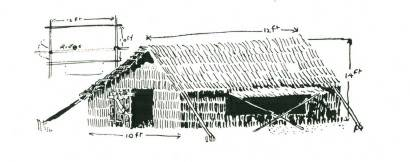
build for his new season camp.
This would be suitable for a short summer shelter for two fellows. It can be put up in one to three hours.
This long hut, about twelve feet by ten feet wide, will house five to twelve men, depending on the bunking arrangements, and can be built in about 40 man hours.
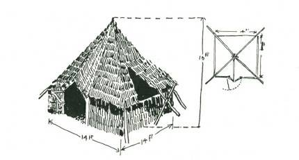
This pyramidal hut, 14 feet square inside the 5 ft. high walls, is comfortable, and an excellent cold weather camp for from eight to sixteen men, according to the bunking arrangements. It can be put up in about 20 man hours.
S ECTIONAL LEAN-TO HUTS
Small one and two man lean-to huts can be easily constructed in an hour or two by making and thatching two or three frames which are from seven to nine feet in length and three feet six to four feet deep.
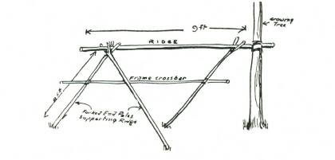
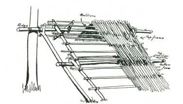
Framework for Sectional Lean-to Shelter
Three Thatced Sections attach to Crossbar and Ridge.
These frames, built of battens, are lashed on to two fork sticks.
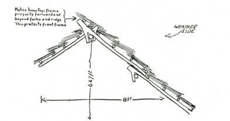
The forks are in the form of hooks at the upper end. The framework for these one or two man shelters is simple to construct.
Assembly on framework of sections.
Note how top of top frame projects forward beyond fork and ridge. This protects front frame, and saves the work of ridge thatching. If raised bunks (see Chapter 3) are being put in, it is advisable to have bottom of thatch about 1’6” to 2’ above ground.
This raises ridge height to 1’ to 1’6” and side poles become 10 to
11 ft. instead of 8 to 9 ft.


Section of assembly.
PERMANENT LEAN-TO HUTS
The permanent lean-to hut using a tree for bracing is simple and quick to erect.
Cutaway section of frame for hut sited between two saplings
The ridge pole is raised against the tree by means of the two end forked poles to the required height, between eight to ten feet, depending on the width. The end forked poles should be at an angle of not less than 45 deg. If the length of ridge is more than 10 to 12 feet, it is advisable to put in another one or two forked poles about halfway along.
On to the end forked poles lash a crossbar (“A”) and lash it again to the upright tree. This crossbar has lashed to its front end a pole (“B”) connecting and lashed to the ridge, and also the front eaves pole (“C”), and also the front thatching battens.
Thatching battens are lashed on to the two rear forks. The distance apart for the thatching battens varies: it may be anything from 6 to 12 in., depending on the length of thatching material being used. A general guide is that battens should be distant about one-fourth of the average length of the thatching material.
An upright in the form of a light fork may be placed under the front corners to the front eave pole. Wall thatch battens are lashed horizontally from the rear forked poles to this upright to wall in the ends of the hut. Wall pegs are driven in along the rear at whatever height is required and to these wall pegs thatching battens are also lashed.
Forked poles should be not less than 3 to 4 in. in diameterthatching battens from 1 to 2 in. Ridge pole about 3 to 4 in.
Use dry timber or dead timber wherever possible. It is lighter to handle and its use avoids destruction of the bush. When making

wall pegs bevel off the head–they will then drive into the ground without splitting.
PYRAMIDAL HUTS
The pyramidal hut, having a square base, is particularly useful where it is desired to make the fullest possible use of wall and floor space.
Pyramidal hut, showing window frame, thatch battens and main structure.
W—WALL RAIL
I—INTERMEDIATE POLES.
F—FORKED CORNER POLES.
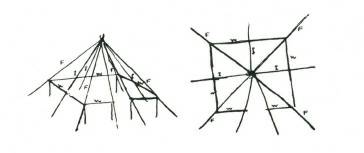
The construction is very much the same for a circular hut except for the intermediate poles. Erection time is considerably less for the pyramidal hut. In this type of hut it is more efficient, when lashing on thatching battens, to make one lashing at each corner secure the two thatching battens, and when the span between fork poles becomes six feet or less to lash only to the corner poles, omitting the lashing to the intermediate poles. If the span between corner poles is greater than six feet it is necessary to lash battens to the intermediate poles.
F—FORK POLES
I—INTERMEDIATE POLES
W—WALL POLES
LONG HUT
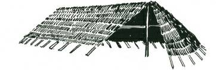
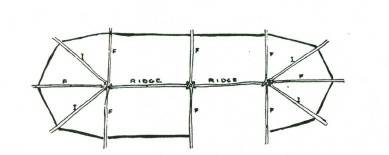
Hut, sixty feet long twenty feet wide, by sixteen feet high, built by five men in four days.
The end portion of this structure is basically the same as onehalf section of the pyramid hut.
The length can be extended to any required distance by prolonging the ridge pole and using additional supporting fork poles. If the ridge is extended and in two or more lengths, these should be lashed together, and it is advisable to notch the ridge so it will sit snugly in the interlocking forks.
Plan of Long Hut. Intermediate poles required if fork poles are
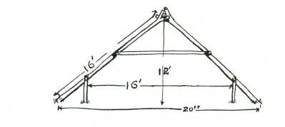
more than 6ft. apart.
When the span is more than 12 ft. lash collar ties on to forks and intermediate poles.
Wall pegs are driven in at a convenient wall height and thatching battens are lashed down. Refinements such as “lift up”
sections for light and ventilation can be added if required.
S TEP BY S TEP CONS TRUCTION OF A CIRCULAR HUT
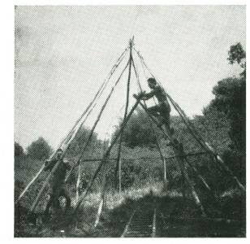
1) First Construction: 30 minutes after start-off with four men on the job.
Note three fork poles to which have been lashed two rafters each, also entrance ridge and entrance poles with wall poles in position.

2) I Hour After Start: The basic structure is completed, a start is made with the thatch battens and wall battens, the door fork is swung.

(3) Lashing on the thatching — battens to the rafters. Note how the lower battens must be strong enough to bear a man's weight.
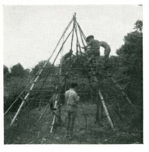
(4) One and a half hours after start: Thatching battens are nearly all lashed on, door is complete, ready for thatching.

(5) Two and a half hours after start: The door is completely thatched, and the thatching is well under way on the roof.

(6) Two and a half hours after start: Three rows of roof thatch laid.
The hut, which was 15 ft. diameter from wall to wall, was completed one hour later, or three and a half hours after the start. No nails or purchased materials were used. This hut would be serviceable and weatherproof for six to ten years.
POLES AND S TRUCTURES
All slopes to be completely waterproof should be not less than
45 deg. (although a 40 deg. slope will shed water). A slope that is
45 deg. is useful and will give good headroom. To work out the most efficient size of poles for main structure it is advisable to discover first the length of pole required and then the approximate diameter, excluding bark. It will be found that the proportion of spread to pole length at 45 deg. slope is as 4 to 3 between base of poles.
Example: If spread at base of poles is 20 ft., then pole length to ridge or crown of hut will be 15 ft. This proportion is constant and wall space or height is not allowed for in the calculations. In general, a wall height of 3 ft. to 4 ft. is sufficient.
Diameter of timber inside bark can be roughly calculated by allowing a minimum of 1 inch diameter at butt for each four to five feet of length. Thus, if a pole is 10 ft. in length, the diameter of wood clear of bark at butt should be not less than 2½ ins. or, if the pole is 20 ft. long, the diameter at butt should be not less than 5 ins.
If the span is relatively wide, or the timber used relatively light, it is advisable to strengthen the structure and prevent sagging or inward bending of the main poles by putting cross ties or collar ties so that the thrust or weight is thrown from one pole on to the pole opposite.
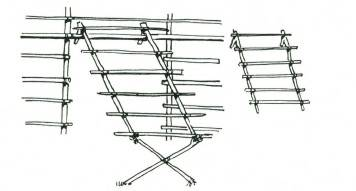
BRACING
Similarly with bracings, if long huts or lean-to type of huts are being built and there is no strong support, such as a growing tree, it is advisable to lash in diagonal braces that extend if possible from ground at one end to ridge at the other end. These bracings will make even a light hut quite storm-proof.
DOORS AND WINDOWS
Refinements such as doors and windows are completely practical in thatch huts, and very little extra work is involved.
Windows are simply two (or three) fork sticks cut off short below the fork and with one long end projecting.
Window frames hook on to thatch batten above window opening.
Thatch battens are lashed to these fork sticks and the framework is lifted up and hung on to one of the thatch battens of the hut. In the general thatching of the hut this window space beneath the windows is left unthatched and the window frame is thatched as a complete unit. It is advisable to leave the window frame rather wider than the opening. It can be propped open at the bottom and still preserve a fair slope. If the window is very wide it is advisable to use three fork sticks. There should be at least six inches overlap of the window and roof thatch at the sides. The loose ends of the thatching above the window frames should be allowed to come directly on to the window thatch, and should completely cover sewing of the top thatching of the window frame.
Doors, if required, are similar to the gate fame shown, but with two uprights lashed across the fork. To these two uprights the horizontal thatching battens are secured.
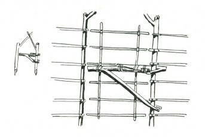

The hinging of the door frame is obtained by a combination of hook and fork.

There are several means whereby the door hinge can be assembled.
TREE S WINGING S HELTER
In swampy country, or in areas which are badly snake infested, a very simple swinging bunk can be made by one man in a day.
The forked frame stick must be very strong, both at the fork on
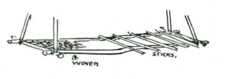
the tree and at the main juncture. Either a cane or vine loop or a hook may be used at the top section. It is also advisable to have a vine or cane rope from the extreme end of the main frame to as high up in the tree as it is practical to reach for additional suspension.
The frame poles for thatch battens are lashed separately with a square lashing to the bottom of the forked frame stick, and, in order to give rigidity, a short cross stick is lashed horizontally to each of the opposite sides of the frame poles.
When thatching, thatch one row on one side, and then the row on the opposite side. This will help to strengthen the framework and keep it correctly balanced.
The bunk is made separately.
The main frame of the bunk is simply four poles lashed together to form a rectangle about three feet by seven. The space between the poles to form the bunk proper can be either woven or made with crossed sticks as for the camp bed (see Chapter 3).
THATCHING MATERIALS
M aterials suitable for thatching range from long grass, reeds, rushes; most of the long stalked ferns, such as bracken, etc.; palm leaves of all types, and, as a last resource, many pliant leafy branches.
Long grass and reeds are most satisfactory when used dry or partly dry. It is advisable if you are going to use these materials to cut and stook them first so that they may get a chance to season before being used on the roof.
There are two good reasons for this: first is that in drying out most of these materials, if green and exposed to hot sun, tend to shrink on one side and turn and curl in shrinking, so reducing the coverage value for thatching. The other is the general tendency of all green materials to shrink, and therefore the thatching stitches become loose, and the thatch may slip from the stitches and be blown away in the first breeze.
When the materials are well seasoned the stitches will not slacken because there is very little shrinkage, and the thatch will stay down securely.
With most of the bracken ferns it is advisable to thatch with the material green, and sew it down very tightly. This also applies if you are forced by circumstances to use green branches. These do not make a very efficient thatch and their use is not recommended except in emergency.
In a general way, the use of bracken and reeds for thatching is doing a very good service to the land generally. Bracken is injurious to cattle, and reeds choke watercourses, so that removing these two pests and putting them to practical use is quite a good thing to do.
If branches of trees or shrubs are to be used, seek out a dead branch with some of the leaves still on it. Shake the branch. If the leaves immediately fall from it, the material is almost useless and will only serve you for a day or so. If the leaves withstand this shaking, the plant will probably serve your purpose fairly effectively. Some trees and shrubs drop their leaves within a few hours of being cut. Such are useless.
The palm leaves are best used for thatching when they are dead. You will find great quantities lying under the palms and these are excellent material. They may be brittle and inclined to break if you start collecting them in the middle of a hot summer day.
The best time to collect dead palm for your thatching is either early in the morning when the leaves are softened’ by the overnight dew, or after rain. It is always advisable to wet the leaves down before you start sewing them on the thatching battens. This damping down softens the brittle leaves, makes them lie flat, and ensures that you get a better coverage.
THATCHING METHODS
There are almost as many different methods of thatching as there are different materials. Each different method has its own peculiar advantage and applications for certain types of material.
The methods you are most likely to find of use are either to sew the thatch on to the thatch battens, which is called “Sewn
Thatching,” or to tuft the material on in bundles, which, appropriately, is called “Tuft Thatching.”
Instead of sewing on to the battens you may find it more convenient to tie a pliant stick on to the thatching batten at convenient intervals, using the pressure of this stick tightly tied to the thatch batten to hold the thatch material secure. This is called
“Stick Thatching.”
There are also several methods by which the thatching materials may be secured to the thatching battens on the ground, and these thatching battens are then laid on to the framework, overlapping like long tiles.
Or with some of the palms the palm stalk itself may be used either as the thatch batten, or to hold the palm leaf itself in the desired position. All these methods are self explanatory, and briefly dealt with on the following pages.
PRINCIPLES OF WATERS HED IN THATCHING
Thatching may be either for shade or to give protection against rain. Thatching for shade presents no problems. If the thatch is thick enough to break up the sun’s rays, that is all that is required.
Thatching for protection against rain or, under certain

conditions, wind, will be effective only if certain principles are observed. It is interesting to watch the behaviour of drops of water on thatch. The drops run down the topmost strands, until they come to the very end of the blade of grass or other material. There the drop gathers size and, when it is big enough, and heavy enough, it falls off and on to the blade immediately beneath.
If the stitching interrupts the smooth continued course of the water droplets, then the water will follow the stitching because it is at a steeper angle. It will creep along the stitch and when it reaches the lowest point, on the underside of the thatching batten, the drop will gradually build up until it becomes too heavy to ream in on the sewing material. Then you will complain that the “thatching leaks”.
Thatch will never leak if the stitching is properly covered.
It is this quality of “coverage” rather than thickness which makes a thatch waterproof. Windproofing lies largely in the
“tightness” and thickness of the thatching.
S EWN THATCHING
Stitch at bottom of first thatch on lowest thatching batten. The second layer must overlay the stitching of the first row and include the top section of the underneath layer in the actual stitch. It is better to have each layer held by three rows of stitching. The stitching of every row M UST be completely covered by the free ends of the next layer above it.
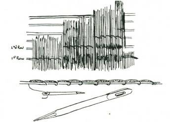
To sew thatching make a thatching needle by cutting a dead, straight grained stick one inch thick and about 18 inches long.
Sharpen one end and rub it fairly smooth on a stone. Narrow the other end till it is about one quarter of an inch thick, but the full width of the stick. This end should be flattened for about three inches.
About two inches from the end cut an eye carefully through the flat side. This eye should be about one quarter inch wide and at least half an inch long.
Lay the thatching material with the butts towards the roof and the lower end on the lowest batten. Secure one end of the sewing

material with a timber hitch to the thatching batten, thread the other end through the eye of the thatching needle and sew in the ordinary manner to the thatching batten. To avoid holes where the sewing may tend to bunch the thatching together, pass the needle through the thatch at the angle indicated in the sketch and push thatch over the crossing of the stitches.
S TICK THATCH
With this stick thatch, ties about two feet apart are fastened on to the thatching batten. The thatching stick is tied at one end, the thatching material placed under it, and when the tie, fixed on the thatching batten is reached, the stick is tied down, thus binding the thatching to the batten. This method of securing thatching is useful when long lengths of material for sewing are not readily available.
The overlapping and general principles of sewn thatching are followed.
TUFT THATCHING
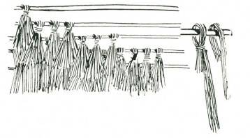